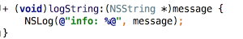

You can convert functions to methods and vice versa.
For example, in the code fragment below, you could select a function
and then select Refactor | Convert to Method.
This would result in the following:

You can also convert blocks to functions or methods and vice versa.